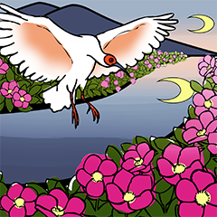

映像

平面デザイン
-
スイーツ
特集 -
かまぼこ
ロゴ -
小学生
ピクト -
読み聞かせ
絵本 -
名刺
-
イニシャル
-
食事処
ピクト -

海洋ゴミ
アート
その他

経歴
富山県黒部市出身
富山県立雄峰高等学校 通信制普通科
金沢学院大学 芸術学部芸術学科（2025年3月卒業予定）
資格
普通自動車第一種運転免許（AT限定）
全国大学実務教育協会認定 情報処理士
資格
普通自動車第一種運転免許（AT限定）
好奇心旺盛な性格です。
興味を持ったことに一瞬でのめりこみ、わからないことがあれば調べずにはいられません。目的に向かってまっすぐ進むことは苦手ですが、寄り道した分多くの収穫を得ます。
呑み込みが早い性格です。
ツールの使い方や、未知の作品ジャンルの作り方などの要領を素早くつかみ、「それなり」にすることができます。
突き詰めて考える性格です。
この表現は作品にふさわしいか、他の部分と内容の矛盾はないか、どのようにすれば最も良い伝わり方をするかなど、何度も検討してこだわりをもって作品を仕上げていきます。